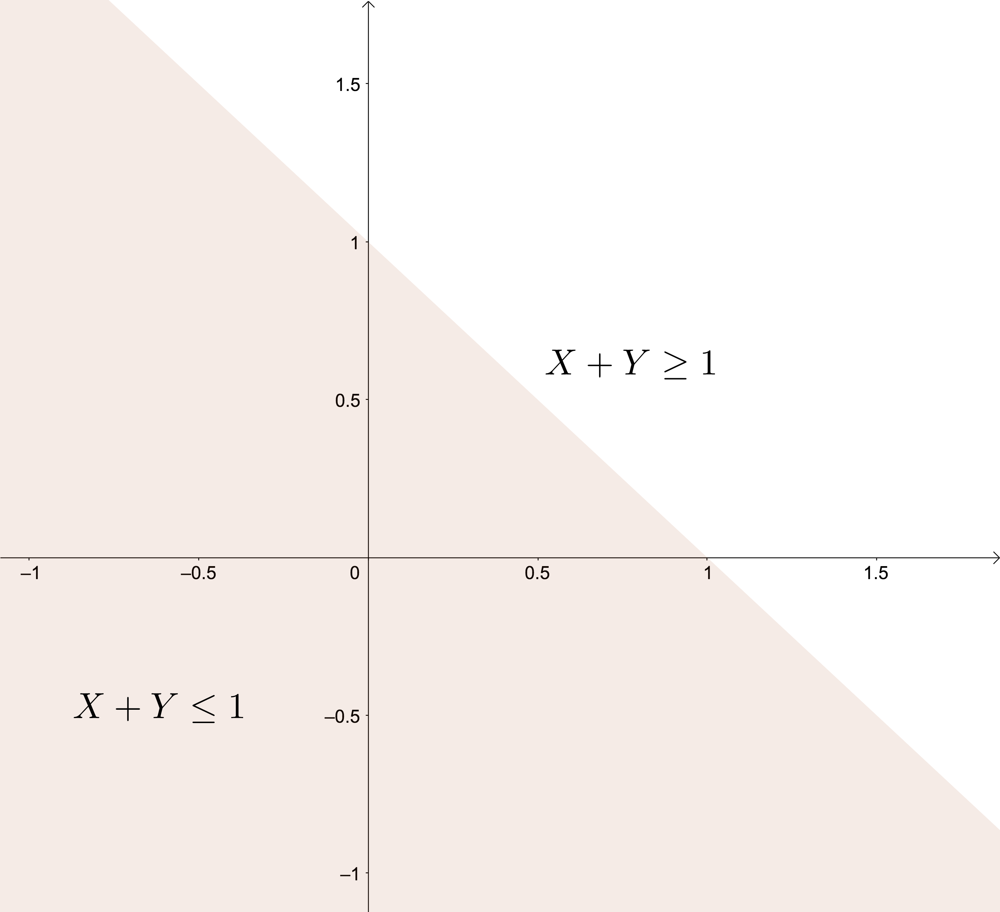
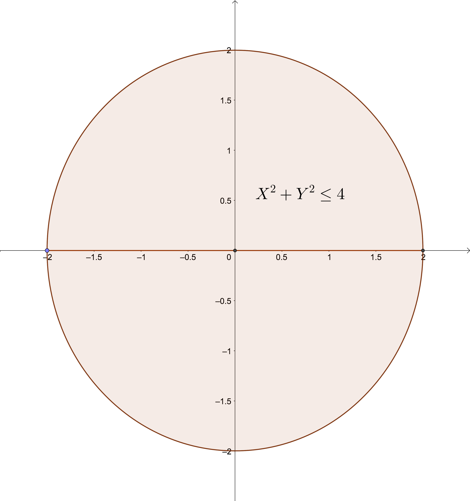
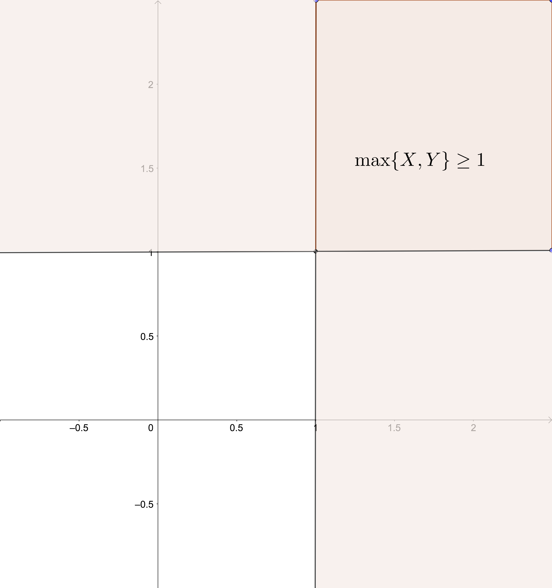
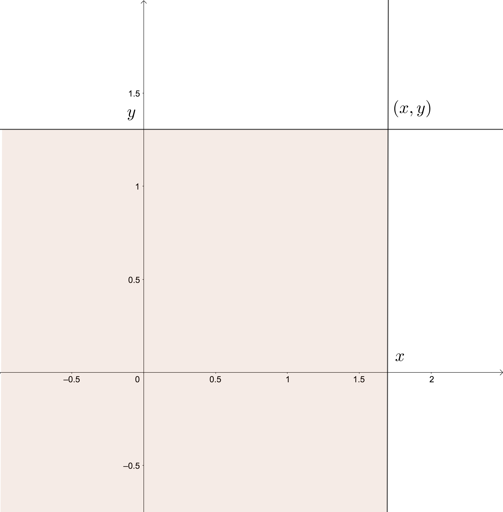
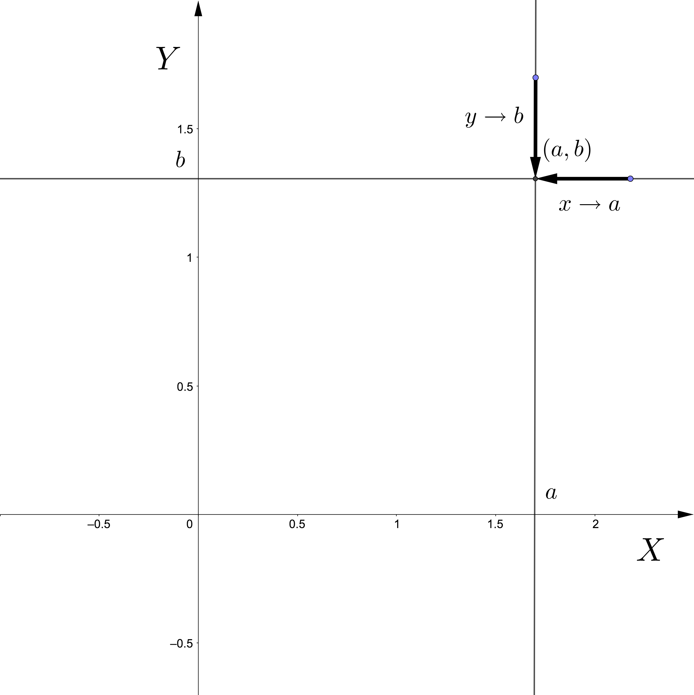

6 Vectores aleatorios bidimensionales
6.1 Dos variables aleatorias
Muchos experimentos aleatorios involucran varias variables aleatorias.
Por ejemplo, dado un individuo de 30 años escogido al azar de una cierta población, medir su altura y su peso conjuntamente.
Otro ejemplo más complejo es la medición continuada de un fenómeno aleatorio que se repite en el tiempo, como sería medir la temperatura media un día determinado del año, por ejemplo el día 1 de enero en un cierto lugar.
La variable aleatoria que nos da la medición en 10 años es una variable aleatoria de varias variables que involucra 10 variables aleatorias supuestas independientes e idénticamente distribuidas, lo que en estadística inferencial se le llama una muestra aleatoria simple.
6.1.1 Definición
Recordemos que una variable aleatoria \(X\) es una aplicación que toma valores numéricos para cada resultado de un experimento aleatorio: \[ \begin{array}{rl} X: \Omega & \longrightarrow \mathbb{R}\\ w & \longrightarrow X(w). \end{array} \] A partir de la definición anterior, generalizamos la noción de variable aleatoria unidimensional a variable aleatoria bidimensional:
Ejemplo: lanzamiento dos dados
Consideremos el experimento aleatorio de lanzar un dado no trucado dos veces.
Sea \(S\) la suma de los resultados obtenidos y \(P\) el producto de los mismos.
La variable aleatoria \((S,P)\) que asigna a cada resultado \(w=(x_1,x_2)\) donde \(x_1\) es el resultado obtenido en el primer lanzamiento y \(x_2\), el resultado obtenido en el segundo, los valores: \(S(w)=x_1+x_2\) y \(P(w)=x_1\cdot x_2\) es una variable aleatoria bidimensional.
El suceso \(\{2\leq S\leq 4,\ 3\leq P\leq 6\}\) seria: \[ \{2\leq S\leq 4,\ 3\leq P\leq 6\} = \{(1,3),(3,1),(2,2)\}. \]
Ejemplo
Consideremos el experimento aleatorio de elegir al azar un estudiante de primer curso de grado. Sea \(w\) el estudiante elegido. Consideremos la variable aleatoria \((H,W)\) que asigna a dicho estudiante \(w\), \(H(w):\) la altura de dicho estudiante en cm. y \(W(w):\) el peso de dicho estudiante en kg.Estamos interesado en sucesos del tipo \(A=\{H\leq 176,\ W\leq 85\}\), es decir, el conjunto de estudiantes que miden menos de 1.76 m. y que pesan menos de 85 kg.
6.1.2 Representación del dominio de una variable aleatoria bidimensional
Los sucesos que se derivan de una variable aleatoria bidimensional estan especificados por regiones del plano. Veamos algunos ejemplos:
Suceso: \(\{X+Y\leq 1\}\). Es la zona sombreada del gráfico siguiente:
Suceso: \(\{X^2+Y^2\leq 4\}\). Es la zona sombreada del gráfico siguiente:

Suceso: \(\{\max\{X,Y\}\geq 1\}\). Esta zona es la sombreada del gráfico siguiente:

La probabilidad de que la variable bidimensional pertenezca a una cierta región del plano \(B\) se define de la forma siguiente: \[ P((X,Y)\in B)=P\{w\in \Omega,\ |\ (X(w),Y(w))\in B\}, \] es decir, la probabilidad anterior es la probabilidad del suceso formado por los elementos de \(w\in\Omega\) que cumplen que su imagen por la variable aleatoria bidimensional \((X,Y)\) esté en \(B\).
Por ejemplo, si consideramos \(B=\{X+Y\leq 1\}\), \(P((X,Y)\in B)\) es la probabilidad del suceso formado por los elementos \(w\) de \(\Omega\) tal que la suma de las imágenes por \(X\) e \(Y\) sea menor o igual que 1: \(X(w)+Y(w)\leq 1\).
6.2 Función de distribución conjunta
6.2.1 Definición
Dada una variable aleatoria bidimensional \((X,Y)\), queremos estudiar cómo se distribuye la probabilidad de sucesos cualesquiera de la forma \(\{(X,Y)\in B\}\), donde \(B\) es una región del plano.
Para ello, definimos la función de distribución conjunta:

Entonces la función de distribución conjunta en el valor \((x,y)\) es la probabilidad del suceso formado por aquellos elementos tal que la imagen por la variable aleatoria bidimensional \((X,Y)\) caen dentro de la región sombreada en el gráfico anterior:
\[ \begin{array}{rl} F_{XY}(x,y) &= P\{w\in\Omega,\ |\ (X(w),Y(w))\in (-\infty,x]\times (-\infty,y]\} \\ &= P\{w\in\Omega,\ |\ X(w)\leq x,\ Y(w)\leq y\}. \end{array} \]
6.2.2 Propiedades
Sea \((X,Y)\) una variable bidimensional. y sea \(F_{XY}\) su función de distribución conjunta. Dicha función satisface las propiedades siguientes:
La función de distribución conjunta es no decreciente en cada una de las variables: \[ \mbox{Si }x_1\leq x_2, \mbox{ y }y_1\leq y_2,\mbox{ entonces, }F_{XY}(x_1,y_1)\leq F_{XY}(x_2,y_2). \]
\(F_{XY}(x,-\infty)=F_{XY}(-\infty,y)=0,\) \(F_{XY}(\infty,\infty)=1\), para todo \(x,y\in\mathbb{R}\).
Las variables aleatorias \(X\) e \(Y\) se llaman variables aleatorias marginales y sus funciones de distribución \(F_X\) y \(F_Y\) pueden hallarse de la forma siguiente como función de la función de distribución conjunta \(F_{XY}\): \[ F_X(x)=F_{XY}(x,\infty),\ F_Y(y)=F_{XY}(\infty,y), \] para todo \(x,y\in\mathbb{R}\).
La función de distribución conjunta es continua por el “norte” y por el “este”: \[ \begin{array}{rl} \lim_{x\to a^+}F_{XY}(x,y) & =\lim_{x\to a, x> a}F_{XY}(x,y)=F_{XY}(a,y), \\ \lim_{y\to b^+}F_{XY}(x,y) & =\lim_{y\to b, y> b}F_{XY}(x,y)=F_{XY}(x,b), \end{array} \] para todo \(a,b\in\mathbb{R}\). Ver la siguiente figura.
